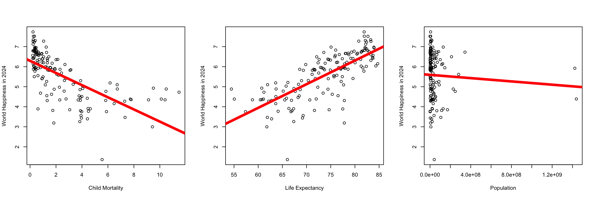
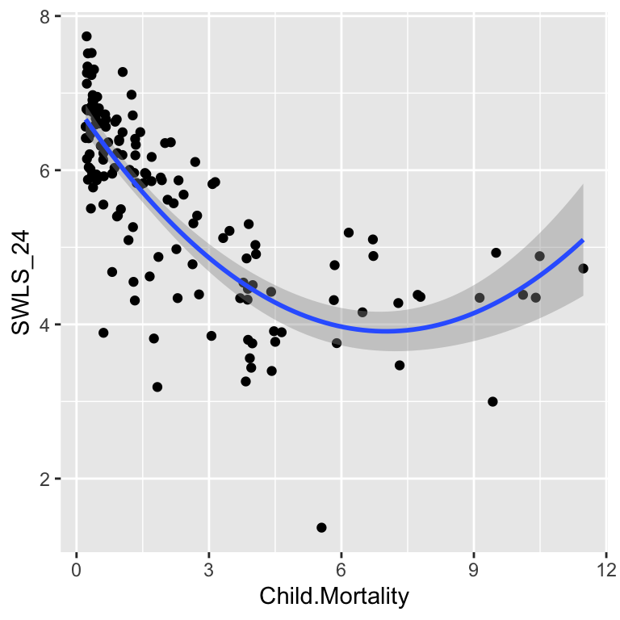
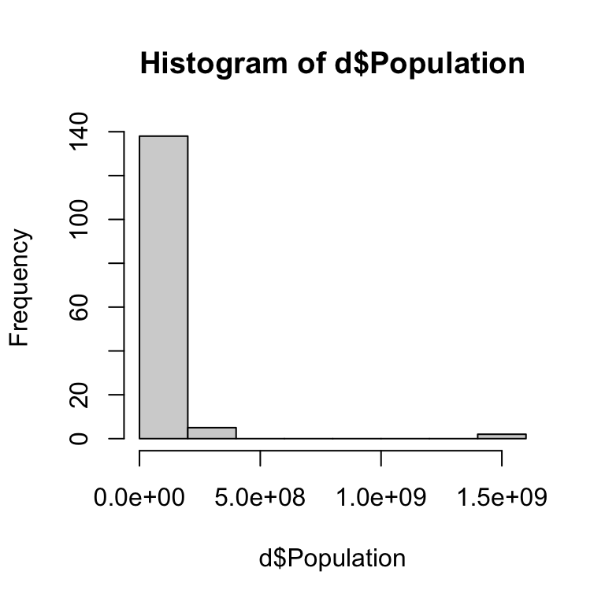
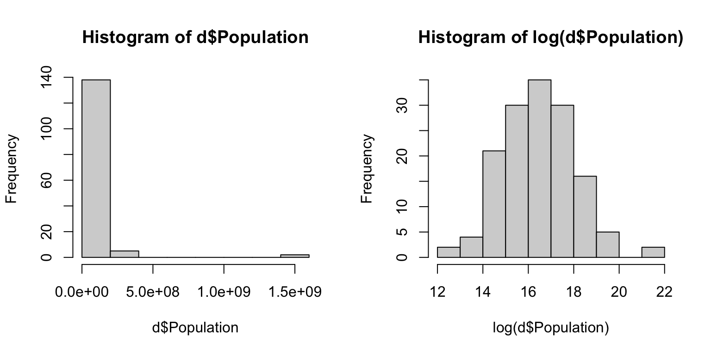
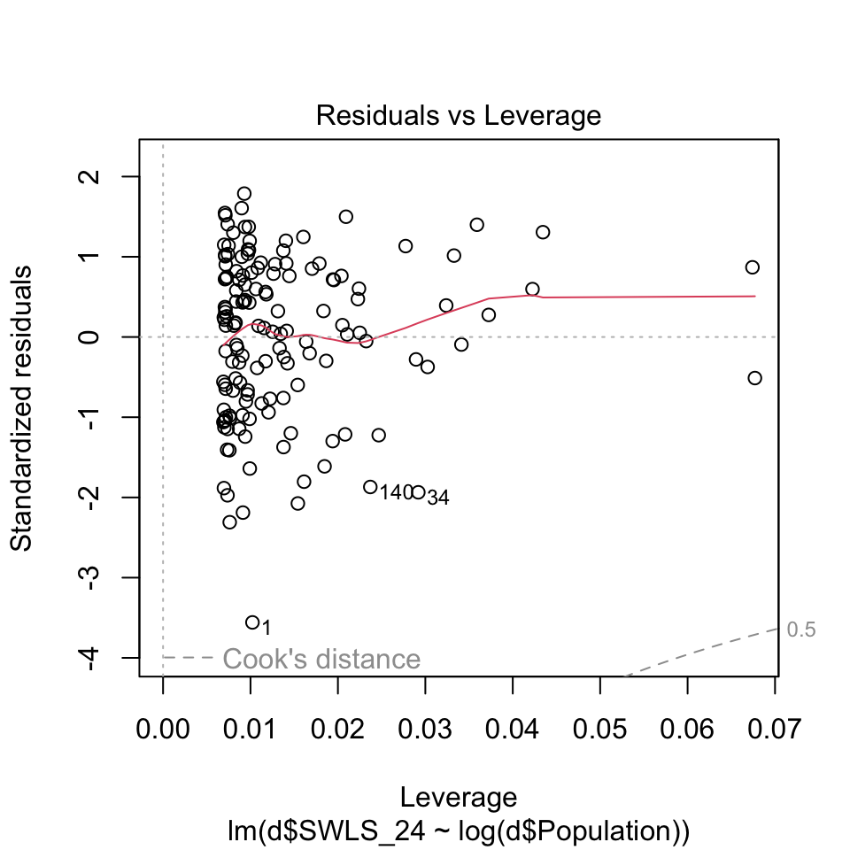
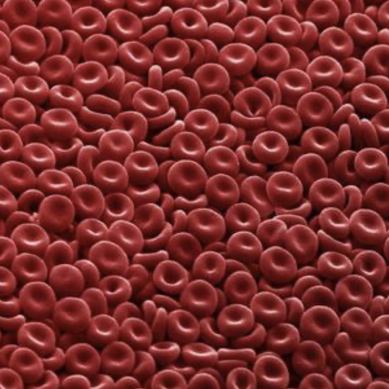
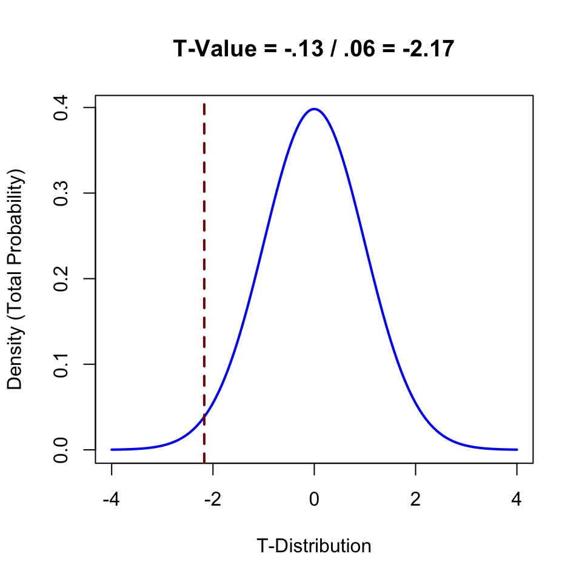
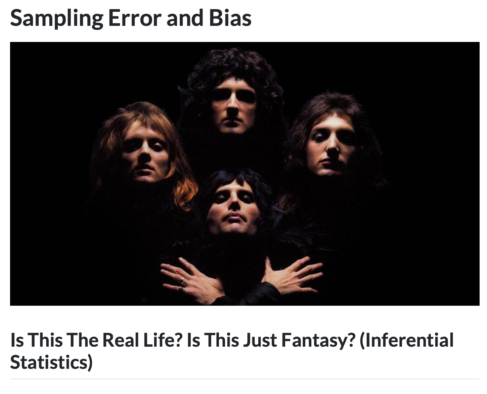
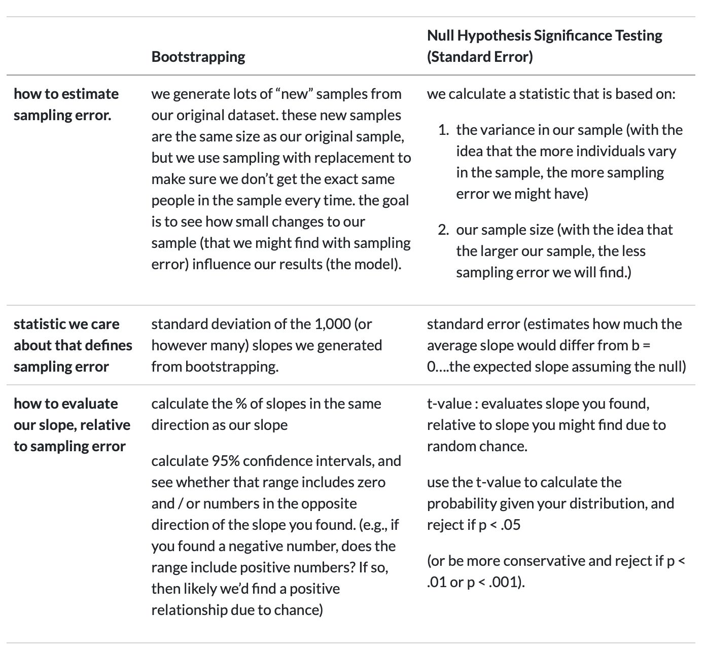

Check-In : Happy World
Use the world happiness dataset (and codebook) to determine whether (a) child mortality, (b) Life Expectancy, or (c) Population is a better predictor of happiness in 2024.

RECAP : Linear Models
NotePotential Check-In Spoilers Below!
Assumptions in Regression
- Look over the “READ THIS : Regression Assumptions” in the Additional Reading for this week.
- We will walk through these together in class :)
Dealing With Assumptions.
mod1b <- lm(d$SWLS_24 ~ d$Child.Mortality + I(d$Child.Mortality^2))
library(ggplot2)
ggplot(d, aes(y = SWLS_24, x = Child.Mortality)) +
geom_point() +
geom_smooth(method = "lm", formula = y ~ poly(x, 2))Warning: Removed 17 rows containing non-finite outside the scale range
(`stat_smooth()`).Warning: Removed 17 rows containing missing values or values outside the scale range
(`geom_point()`).
par(mfrow = c(2,2))
plot(mod2)
hist(d$Population)
par(mfrow = c(1,2))
hist(d$Population)
hist(log(d$Population))
mod3b <- lm(d$SWLS_24 ~ log(d$Population))
plot(d$SWLS_24 ~ log(d$Population), xlab = "Population", ylab = "World Happiness in 2024")
abline(mod3b, lwd = 5, col = 'red')
plot(mod3b)



x <- data.frame(MOD1 = c(summary(mod1)$r.squared, summary(mod1b)$r.squared),
MOD2 = c(summary(mod3)$r.squared, summary(mod3b)$r.squared))
row.names(x) <- c("R2 with no changes", "R2 with changes")
round(x, 2) MOD1 MOD2
R2 with no changes 0.45 0.00
R2 with changes 0.61 0.03Part 2 : Inferential Statistics (“Statistical Significance”)
The Linear Model : Prediction (& Error) in Our Dataset

There is a relationship between Life Expectancy and Happiness (b = .12). In countries with greater life expectancy, the countries report being higher in happiness AMONG PEOPLE SURVEYED IN OUR DATASET.
Question : can we use the information IN OUR DATASET to make a claim about PEOPLE IN GENERAL????
Inferential Statistics : Population and Sample
Goal : use our data to learn something about people in general?
the population : all the individuals who might be relevant to your research question.

the sample : the individuals who the researcher actually studies.
Sample Bias and Error
Problem : our data are unlikely to perfectly represent the general population (so need to estimate influence of each.)
sampling bias = predictable mistakes in sampling.
critical thinking skills
see if slope depends on another variable.
sampling error = random mistakes in sampling.
run the study many many timesmake up some numbers using statistics to estimate sampling error
Estimating Sampling Error in R (Bootstrapping)
- See professor notes and demo in the R-Script.
- See bootstrapping videos (in notes below).
- Ask questions!!
ACTIVITY : in the Vision Board
- Take a statistic that you calculated in Lab 2.
- Use bootstrapping to estimate sampling error for this statistic.
- Evaluate sampling error.
- Think about sampling bias - who is the population? who is in our sample? might the sample bias the results in some way?
NHST : standard error, t-value, and the p-value.

summary(mod3b)
Call:
lm(formula = d$SWLS_24 ~ log(d$Population))
Residuals:
Min 1Q Median 3Q Max
-4.0634 -0.8179 0.1629 0.9009 2.0427
Coefficients:
Estimate Std. Error t value Pr(>|t|)
(Intercept) 7.75748 1.01079 7.675 2.36e-12 ***
log(d$Population) -0.13284 0.06115 -2.173 0.0315 *
---
Signif. codes: 0 '***' 0.001 '**' 0.01 '*' 0.05 '.' 0.1 ' ' 1
Residual standard error: 1.148 on 143 degrees of freedom
(17 observations deleted due to missingness)
Multiple R-squared: 0.03195, Adjusted R-squared: 0.02518
F-statistic: 4.72 on 1 and 143 DF, p-value: 0.03146\[ \text{standard error (SE)} = \frac{\sigma}{\sqrt{n}} \]

summary(mod3b)
Call:
lm(formula = d$SWLS_24 ~ log(d$Population))
Residuals:
Min 1Q Median 3Q Max
-4.0634 -0.8179 0.1629 0.9009 2.0427
Coefficients:
Estimate Std. Error t value Pr(>|t|)
(Intercept) 7.75748 1.01079 7.675 2.36e-12 ***
log(d$Population) -0.13284 0.06115 -2.173 0.0315 *
---
Signif. codes: 0 '***' 0.001 '**' 0.01 '*' 0.05 '.' 0.1 ' ' 1
Residual standard error: 1.148 on 143 degrees of freedom
(17 observations deleted due to missingness)
Multiple R-squared: 0.03195, Adjusted R-squared: 0.02518
F-statistic: 4.72 on 1 and 143 DF, p-value: 0.03146\[ t = \frac{b}{SE} \]

summary(mod3b)
Call:
lm(formula = d$SWLS_24 ~ log(d$Population))
Residuals:
Min 1Q Median 3Q Max
-4.0634 -0.8179 0.1629 0.9009 2.0427
Coefficients:
Estimate Std. Error t value Pr(>|t|)
(Intercept) 7.75748 1.01079 7.675 2.36e-12 ***
log(d$Population) -0.13284 0.06115 -2.173 0.0315 *
---
Signif. codes: 0 '***' 0.001 '**' 0.01 '*' 0.05 '.' 0.1 ' ' 1
Residual standard error: 1.148 on 143 degrees of freedom
(17 observations deleted due to missingness)
Multiple R-squared: 0.03195, Adjusted R-squared: 0.02518
F-statistic: 4.72 on 1 and 143 DF, p-value: 0.03146\(p = Pr(Ts \geq |t_{\text{obs}}| \mid H_0)\)

summary(mod3b)
Call:
lm(formula = d$SWLS_24 ~ log(d$Population))
Residuals:
Min 1Q Median 3Q Max
-4.0634 -0.8179 0.1629 0.9009 2.0427
Coefficients:
Estimate Std. Error t value Pr(>|t|)
(Intercept) 7.75748 1.01079 7.675 2.36e-12 ***
log(d$Population) -0.13284 0.06115 -2.173 0.0315 *
---
Signif. codes: 0 '***' 0.001 '**' 0.01 '*' 0.05 '.' 0.1 ' ' 1
Residual standard error: 1.148 on 143 degrees of freedom
(17 observations deleted due to missingness)
Multiple R-squared: 0.03195, Adjusted R-squared: 0.02518
F-statistic: 4.72 on 1 and 143 DF, p-value: 0.03146TLDR.
- We estimate how much sampling error there might be.
- We compare the slope we found to this guess about sampling error.
- If t-value is high (and p-value is low) then our slope is VERY DIFFERENT from sampling error and we can reject the null hypothesis.
- This is all made up : we might be making a mistake AND a “significant effect” doesn’t mean large or important.
Read More : Chapter on Inferential Statistics in Why Statistics?

Bootstrapping v. NHST

PART 3 : Objectivity Interrogations
RECAP : we (mostly) think it’s possible to work toward validity
Anti-Positivism : Attempts to predict people with numbers is bad.
Positivism : We will someday make perfect predictions about people.
Post-Positivism : We will continually improve our predictions, but never get perfect.
Social Constructivism : There is no “truth” about people; we make it up.
o <- read.csv("~/Dropbox/!GRADSTATS/COMPSS222/Datasets/Class Datasets/MaCSS - Onboarding Data/DATASET_MACSS_onboard_SP26.csv", stringsAsFactors = T)
plot(o$epistemology, col = "black", bor = "white", main = "Epistemologies")
DISCUSS : Questions Y’all Had :)
how to tell the difference between normal academic criticism of a study and criticism that comes from bias against the researcher?
I’d love to see some interview snippts of white interviewees’ answers. [PROF AGREES : the fact they did not include is an example of low DISCRIMINANT VALIDITY, since would want to see evidence that white people are not talking about these things too.]
Objectivity armoring…feels like it has a cultural dimension that we can explore in class as well. [PROF SAYS : YES!]
DISCUSS : examples from your experiences? anticipation in the future?

NEXT WEEK : Non-Empirical Paper
Prof likes because :
model of how to work with participants
focused on a specific population and real-world research question
friends with the lead author.